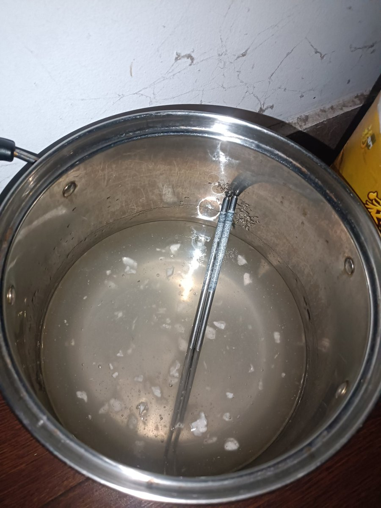

Elysium_Fengxuan🏳⚧🍥
@ElysiumFengxuan
抽象的我做出的抽象东西，一开始80ml75%酒精20ml蒸馏水，加入2.8ml雌二醇（称有问题！一点点加进去不显示重量导致他显示0.2g的时候已经辣么多雌了）企图等待溶解，一小时未溶解，发现称的问题，之后再加入560ml75%酒精，无法溶解，后到药店买95%酒精，ai计算能的溶解最低值需要再加354ml95%酒精，加入354ml酒精出现雌二醇析出，后改为640ml95%酒精，合成的混合物变清晰，底部少量雌二醇粉末残留，后加入13g卡波姆等待溶解，目前混合物情况是照片那样qwq，买了20个100ml的分装瓶，正在快递寄来ing
